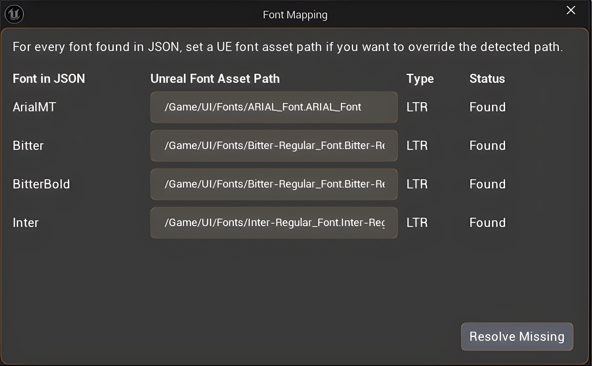

Font Mapping & Font Support
How Photoshop text becomes Unreal text
UI Widget Builder does not embed Photoshop fonts into Unreal. The exporter records font information in layout.json, and the Unreal importer resolves that information to a project font asset when possible.

Font data saved in layout.json
For real Photoshop text layers, the JSX exporter writes the visual text data that the importer needs for UMG.
| Exported data | Used for |
|---|---|
fontFamily, PostScript name, style name |
Finding the matching Unreal font asset or mapped font entry. |
fontStyle, fontWeight, Regular/Bold tokens |
Choosing the correct style, for example Regular vs Bold. |
isItalic / faux italic data |
Choosing italic style or applying Unreal TextBlock skew when Photoshop used faux italic. |
fontSize, line height, tracking |
Setting Unreal font size, line-height percentage, and letter spacing. |
| Text color, alignment, direction | Setting color, justification, RTL/LTR behavior, and visual text layout. |
How the Unreal importer finds a font
The importer uses a practical resolve chain so users do not have to open the Font Mapping popup just to make fonts work.
- 1 Read the Photoshop font data from the text layer: family, style, weight, italic flags, and PostScript name.
- 2 Check explicit Font Mapping when the user mapped a Photoshop font to an Unreal font asset.
-
3
Auto-match project font assets by trying family/style asset-name candidates such as
Bitter-Regular_Font,Bitter-Bold_Font, or similar project font names. - 4 Prefer the correct style. A Photoshop Regular layer should resolve to a Regular asset, and a Bold layer should resolve to a Bold asset when both are available.
- 5 Use safe fallback. If no Unreal font asset is found, the widget is still created and Unreal uses its default font.
The current importer resolves font mapping without requiring the user to open the Font Mapping popup first. Opening the popup is only needed when the user wants to override or manually map fonts.
What happens if the font does not exist in Unreal?
| Situation | Result | Fix |
|---|---|---|
| Photoshop font is not imported into the Unreal project | The TextBlock/imported input still exists, but it displays with Unreal's default font. | Import the matching TTF/OTF/Font asset into Unreal, then reimport the UI. |
| Only Regular exists, but Photoshop layer is Bold | The importer may fall back to the closest available family/style. | Import the Bold asset too, or manually map that Photoshop font/style. |
| Wrong font family name or asset naming | Auto-match may miss it. | Use Font Mapping to connect the Photoshop font family to the intended Unreal font asset. |
| RTL language font missing glyphs | Text can appear as missing boxes or wrong direction/shape. | Use a font that supports the language glyphs and test the generated Widget Blueprint. |
The PSD/JPG/PNG export does not carry licensed font files into Unreal. Users must have the font asset available in their Unreal project, or accept the default-font fallback.
Common mapping examples
| Photoshop text layer | Expected Unreal result |
|---|---|
Bitter Regular |
Resolve to a Regular asset such as Bitter-Regular_Font when available. |
Bitter Bold |
Resolve to a Bold asset such as Bitter-Bold_Font when available. |
ArialMT |
Can resolve to an Unreal Arial asset such as ARIAL_Font. |
Inter Regular / Bold |
Regular and Bold are handled separately so one style does not force all text to the same weight. |
ETB_, ETBM_, and ETM_ font behavior
Editable input widgets do not always carry their own Photoshop text style directly. The importer uses their placeholder/child text layer as the font source.
| Widget | How font is resolved |
|---|---|
| ETB_ | Uses the child TXT_ placeholder/text layer for font, size, color, and placeholder styling. |
| ETBM_ / ETM_ | Uses the child TXT_ text layer for multi-line input font data. |
| BG_ under input | Used for the input background brush states: normal, hovered, focused, and read-only. |
Best practice for reliable font imports
- 1 Import your font files into Unreal first, including each style you use in Photoshop: Regular, Bold, Italic, etc.
-
2
Name font assets clearly, for example
Inter-Regular_FontandInter-Bold_Font. - 3 Run the importer. The auto resolver will try to match the Photoshop family/style to your project font assets.
- 4 Use Font Mapping for overrides when auto-match cannot know which asset you prefer.
- 5 Reimport after changing fonts. Generated Widget Blueprints are output assets; reimport to apply updated mappings cleanly.